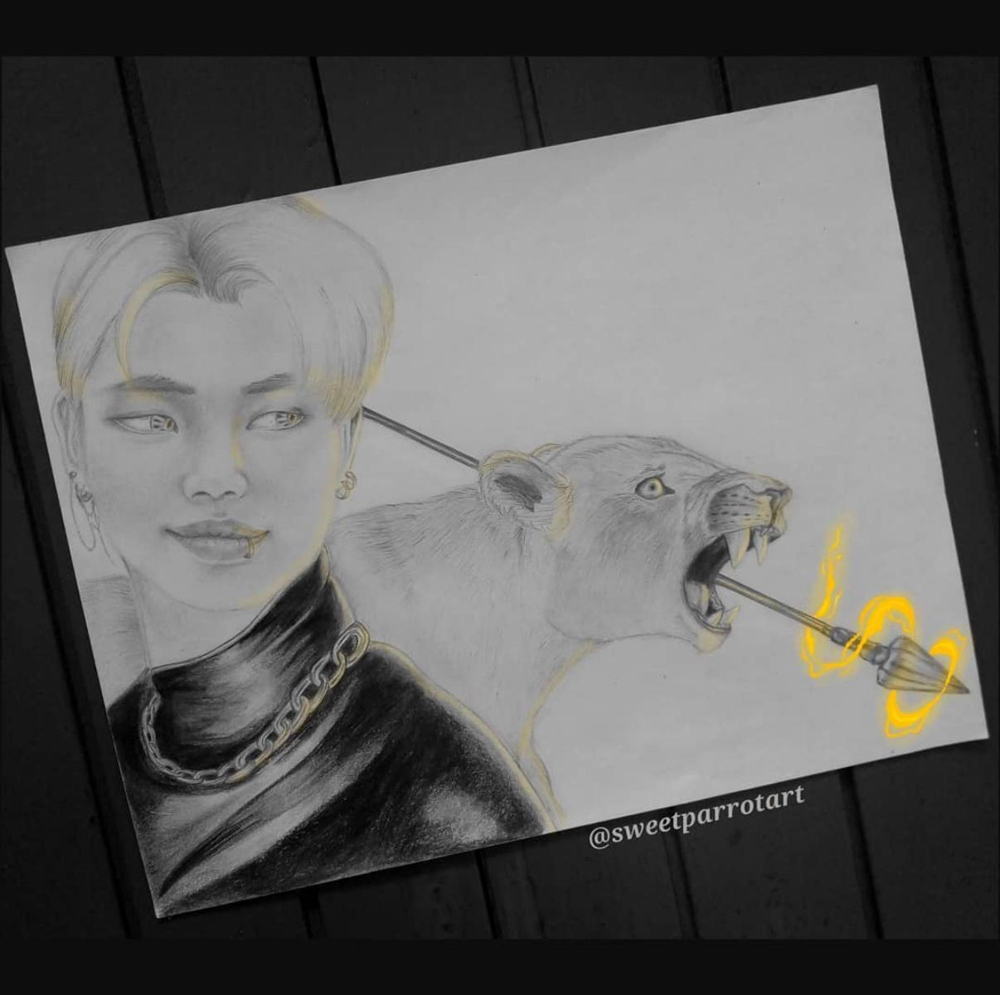

¿Qué es el arte digital?
El arte digital utiliza herramientas tecnológicas para crear ilustraciones, diseños y diferentes expresiones artísticas. Actualmente, los artistas pueden combinar técnicas tradicionales con recursos digitales.

Tecnología y creatividad
Las herramientas digitales permiten desarrollar nuevas formas de expresión artística y facilitan la creación, edición y publicación de contenidos visuales.
Conocer más sobre tecnologías web